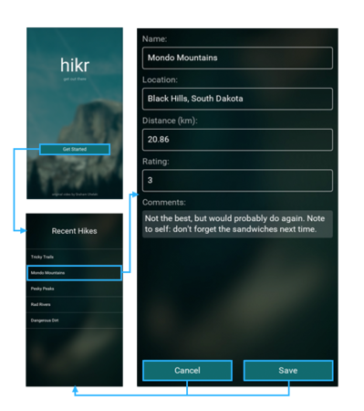
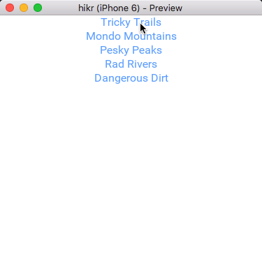

Introduction
In the last chapter, we split the views of our app into separate components, which was a big step forward towards a nice, scalable architecture. We also briefly touched on navigation using a PageControl, which worked fine as a first step towards hooking our pages back together in a meaningful way.
While PageControl works great when you have a couple views that you want presented "side-by-side" with the ability to swipe between them, it's not quite perfect for our use case. For example, our EditHikePage isn't very useful until it actually has a hike to edit, so it doesn't make sense to simply swipe to that view. Instead, we'd like to navigate to that view once we've selected one of the available hikes to edit in our HomePage, and it'd be even better if we didn't have to keep the EditHikePage around until we needed it.
As it turns out, Fuse provides tools to handle all of this with its Navigator and Router classes, along with a handful of other simple concepts. In this chapter, we'll take a look at each of these things as we incorporate them into our app step by step. So let's get started!
The final code for this chapter is available here.
Migrating to Navigator
Similar to a PageControl, a Navigator is a navigation container. This is a fancy way of saying it's a control that can contain components (usually Pages) that we can navigate to. However, unlike a PageControl, a Navigator uses templates to instantiate its child components on-demand. This allows a Navigator to instantiate and recycle pages as needed, conserving precious system resources. Also, Navigator doesn't support swiping between its pages by default like PageControl, but that's because it can express richer relationships between its children.
So, how do we request which component to navigate to when using a Navigator? we'll cover that in the next section when we cover the Router. Essentially, the best way to explain these concepts is to see them in action, and before we do that, we need a Navigator. So let's start by replacing our PageControl with a Navigator!
First, let's open up MainView.ux, and simply replace PageControl with Navigator:
<App>
<ClientPanel>
<Navigator>
<HomePage />
<EditHikePage />
</Navigator>
</ClientPanel>
</App>
Now, because the Navigator expects templates instead of instances for its children, we'll need to update these as well. Luckily, Fuse makes this pretty easy - all we have to do is add a ux:Template attribute to each of our Navigator's children, like so:
<App>
<ClientPanel>
<Navigator>
<HomePage ux:Template="home" />
<EditHikePage ux:Template="editHike" />
</Navigator>
</ClientPanel>
</App>
Basically, what each of these attributes says is that for a given key (home and editHike in this case), we want the Navigator to instantiate the associated class. So, if the Navigator is asked to navigate to home, it will instantiate a HomePage instance (if it hasn't already) and navigate there. Similarly, when asked to navigate to editHike, it will instantiate an EditHikePage instance (if it hasn't already) and navigate to that instead. We can add any amount of templates we want, given each of the keys is unique (if they weren't, the Navigator wouldn't know which template to use for a given key).
Now, if we save this, our previews will update, but our pages will disappear! This makes sense, because we've only specified which templates our Navigator will use to create its child components, but we haven't asked it to actually instantiate anything yet. Typically, we'll do this by navigating to a specific route, as we'll see in the next section. However, Navigator also supports specifying a default path that will be used to create a default child if we haven't navigated to one of its children yet. This is a common case that's perfect for our use case, as we'll want our Navigator to display our HomePage first, and then navigate to the EditHikePage once we've selected a hike to edit.
To specify the default path for our Navigator, all we have to do is add a DefaultPath attribute which will specify the key of the template we want the Navigator to instantiate initially:
<App>
<ClientPanel>
<Navigator DefaultPath="home">
<HomePage ux:Template="home" />
<EditHikePage ux:Template="editHike" />
</Navigator>
</ClientPanel>
</App>
Now, when we save this, our HomePage will be displayed like we expect. Cool! Note that we can also change the DefaultPath to editHike to show our EditHikePage if we'd like. Feel free to try it!
Routing with Router
Now that we're using a Navigator and templates, it's time to tell the Navigator which Page we want to navigate to. This is where the Router comes in!
A Router manages routing, which encompasses both specifying where in our app we'll navigate to, and actually getting us there. More specifically, a Router will navigate through our app using a given route, which determines a sort of "target" that we want to navigate to, and possibly including some additional data to go along with it. It will actually perform the navigation by searching our visual tree to find router outlets, which are controls that will participate in routing. For example, PageControl and Navigator are both router outlets. A Router can also keep track of a history of routes we've been to before, and navigate there again if we want.
Now, that can be a lot to take in. Indeed, the Router is capable of quite a lot of things, and it's very powerful! It's also very easy to use and quite intuitive, so let's add a Router to our app and see how we can use it to navigate between our two pages.
The first thing we'll do is actually create a Router instance. In our case, we'll only need one Router for the entire app. This is quite common. So, we'll add our Router near the top of our App class:
<App>
<Router />
<ClientPanel>
<Navigator DefaultPath="home">
...
Now that we've got a Router instance, we need to inject it into our HomePage so that it can tell the Router to navigate to the EditHikePage. There are a few ways to do this, but the best in our case is going to be through the use of a dependency. Dependencies allow us to specify additional things that our components need in order to function properly. If we add a dependency to one of our components, then Fuse will make sure we specify something to satisfy this dependency, or else a compile error will be thrown. This ensures that our components' dependencies are always met, and is very helpful for ensuring correct code.
So, let's add a Router dependency to our HomePage. This is very similar to adding a Router instance, so we'll do that first at the top of the Page:
<Page ux:Class="HomePage">
<Router />
...
All we have to do to make this a dependency is to add a ux:Dependency attribute that will specify the name of this dependency in the context of our component. For example, let's add this attribute and call our dependency Router:
<Page ux:Class="HomePage">
<Router ux:Dependency="router" />
...
Now, instead of creating a Router instance, Fuse will expect that we specified a Router for our Router dependency when creating our component instance. This means that in addition to specifying our dependency, we need to hook up our Router in MainView to this dependency as well.
To do this, we'll go back to MainView.ux. First, we'll give our Router a name by using a ux:Name attribute:
<App>
<Router ux:Name="router" />
...
By giving it a name, we can now refer to this particular Router instance easily. Next, we'll make sure that this instance is provided to our HomePage instance like so:
<App>
<Router ux:Name="router" />
<ClientPanel>
<Navigator DefaultPath="home">
<HomePage ux:Template="home" router="router" />
...
By adding router="router" to our HomePage instance, we've communicated that the Router dependency in HomePage (denoted by router=) will be satisfied with our Router object (denoted by "router"). Notice how this looks a lot like specifying a property value, except we tend to use lower-case names for dependencies. Also, if we didn't specify this value, Fuse would give us an error, because dependencies for a component must be satisfied for a component to work properly.
At this point, we can save both MainView.ux and HomePage.ux. Note that if we're running preview, Fuse might give us an error in between saving the files. Which error you get will depend on which order you save the files, and comes from the fact that Fuse either doesn't know about our dependency or the value we specified to satisfy it. However, after saving both files, everything should be back to normal, and now HomePage will have access to a Router. Cool!
Now that our HomePage has a Router instance to work with, we'll want it to use that Router to navigate to the EditHikePage. If we look at our HomePage.js file, we already have a function hooked up to our selector view that we'll want to fill in for this, called chooseHike:
function chooseHike(arg) {
// TODO
}
Before we fill in this function, I'd like to rename it from chooseHike to goToHike. This is a small detail, but will better communicate the intent of the function and keep things a bit cleaner. So, let's change its name:
function goToHike(arg) {
// TODO
}
We'll also update its name in our module.exports below:
module.exports = {
hikes: hikes,
goToHike: goToHike
};
Finally, we'll update the reference to it in HomePage.ux:
<Each Items="{hikes}">
<Button Text="{name}" Clicked="{goToHike}" />
</Each>
That's better! Now we can save these files, and we're ready to go back to HomePage.js and fill in our goToHike function!
The first thing we'll need to do is grab the hike object from the function's argument. We'll do this exactly like we did in chapter 2, which looks like this:
function goToHike(arg) {
var hike = arg.data;
}
Now that we've got our hike object, we'll want to navigate to our EditHikePage, so we'll also need our Router dependency from UX. Luckily, in Fuse, the value of a ux:Dependency can be retrieved from JavaScript simply by referring to its name. So, if we refer to Router in HomePage.js, we're actually referring to the Router that was passed in from MainView.ux through the ux:Dependency in HomePage.ux:
function goToHike(arg) {
var hike = arg.data;
router // We have our Router, but what will we do with it?
}
It's that easy! Now, all we need to do is tell Router to navigate to the EditHikePage. To do this, we'll use a JavaScript function that's available on Router called push:
function goToHike(arg) {
var hike = arg.data;
router.push("editHike");
}
The push function will navigate to the given route, which in this case is specified to be simply "editHike". This means that the Router will navigate to editHike, which, if we remember our Navigator and templates from MainView.ux, will specify an instance of EditHikePage, just like we wanted! If we save HomePage.js and select one of the hikes, our app will take us to the EditHike page just like we'd expect. Of course, we still haven't actually sent our hike object to this page yet, but we'll get to that shortly.
While it's certainly cool that we've finally got our navigation from HomePage to EditHikePage set up, we'll need a way to get back to our HomePage before we move on. If we look at our original design, we can see that we had Save and Cancel buttons:

However, since we're not making any model changes yet, we'll start by making a Back button instead. This will be easy to change into a Cancel button later.
First, we'll need to add a Router dependency to EditHikePage, just like we did with HomePage. In EditHikePage.ux, we'll add the dependency:
<Page ux:Class="EditHikePage">
<Router ux:Dependency="router" />
...
And in MainView.ux, we'll satisfy that dependency:
<Navigator DefaultPath="home">
<HomePage ux:Template="home" router="router" />
<EditHikePage ux:Template="editHike" router="router" />
Easy enough! Let's save these files, and then we'll head back to EditHikePage.ux and create a simple back button at the bottom, like so:
...
<TextView Value="{comments}" TextWrapping="Wrap" />
<Button Text="Back" />
</StackPanel>
</ScrollView>
</Page>
Let's also add a Clicked handler while we're at it, even though we haven't created the function it will refer to yet (we'll do that right after):
...
<TextView Value="{comments}" TextWrapping="Wrap" />
<Button Text="Back" Clicked="{goBack}" />
</StackPanel>
</ScrollView>
</Page>
Our handler will be called goBack. Let's go to EditHikePage.js, create this function, and add it to our exports:
...
function goBack() {
// TODO
}
module.exports = {
...
goBack: goBack
};
Now, we're ready to fill in this function. This is really simple:
function goBack() {
router.goBack();
}
Here we're just telling our Router object to go back to the route it was at previously by calling its goBack function. This works because a Router can keep track of its history as it moves through the app, and because we navigated to this page using the push function, we've guaranteed this would happen. Interestingly enough, if we had used the Router's goto function, we still would have been able to get to our EditHikePage, but the Router wouldn't have kept track of the history for us.
Note:
goBackis automatically hooked up to the device's built-in back button, where applicable. We can simulate pushing this button in PC preview by using Cmd+B (OS X) or Control+B (Windows).
Finally, we can save all of this and see that our back button does indeed work! Now we're really starting to see how these pieces are working together.
Sending data between our pages
The last thing we need to do is send our hike to EditHikePage in addition to navigating to it. There's actually two parts to this; sending the hike from HomePage, and receiving the hike in EditHikePage. We'll start with the first part; sending the hike.
This part will be pretty easy. If we go back to HomePage.js, we already have most of the parts there in our goToHike function:
function goToHike(arg) {
var hike = arg.data;
router.push("editHike");
}
All we need to do is add our hike object to the route when calling push, and the Router will send this data along for us. This works because our hike object is plain old data; it only contains simple string data, no functions or anything fancy like that. This is a requirement for objects sent via the Router.
To send our hike, we'll just pass the hike object along with our route in the call to push, like so:
function goToHike(arg) {
var hike = arg.data;
router.push("editHike", hike);
}
This way, we tell the Router to navigate to the editHike route, and pass our hike object to the target there (in our case, to an EditHikePage instance).
Note: Although we're only going to use simple navigation in this tutorial, it's possible to do multi-level navigation as well. See the Multi-level navigation section of our Navigation article for more info!
Now that we're also sending the hike data to our EditHikePage, we need to add some code to EditHikePage to receive that data. Fuse provides a special tool specifically for this purpose. In JavaScript, we can access a special Observable called Parameter that's available to our JS module. This Parameter Observable represents all of the incoming values passed to our component via the Router. To use this, let's take a look at our hike Observable that we already have in EditHikePage.js:
var Observable = require("FuseJS/Observable");
var hike = Observable();
...
Ideally, what we want to do is populate this hike Observable with all of the values that come in via the Parameter Observable. There are a couple ways we can do that, but the simplest is to just do the following:
var hike = this.Parameter;
...
In fact, we don't need to create a new Observable at all; we can just use Parameter since we know it will be receiving hike objects. Notice how we've also removed the var Observable = require("FuseJS/Observable"); line, as we no longer need to reference that directly. This makes things really simple!
Note:
Parameteris referred to usingthis.Parameter, not justParameter. This is becauseParameteris part of our module definition, and refers to this specific instance ofEditHikePage, so it needs to be qualified usingthis. Also note thatthiscan take on different meanings depending on where it's used in JavaScript, so it's important to use the right instance in the root of the module.
Now, if we save all of this, we can see that our EditHikeView is finally populated with data again! We can navigate back and forth between our pages and see that the EditHikePage indeed gets populated with the correct hike's data each time. Cool!
Our progress so far
At this point, we've got our two components all set up with navigation and passing data between them! Our app currently looks like this:

And here's the code for the various files we modified in this chapter:
MainView.ux
<App>
<Router ux:Name="router" />
<ClientPanel>
<Navigator DefaultPath="home">
<HomePage ux:Template="home" router="router" />
<EditHikePage ux:Template="editHike" router="router" />
</Navigator>
</ClientPanel>
</App>
Pages/HomePage.ux:
<Page ux:Class="HomePage">
<Router ux:Dependency="router" />
<JavaScript File="HomePage.js" />
<ScrollView>
<StackPanel>
<Each Items="{hikes}">
<Button Text="{name}" Clicked="{goToHike}" />
</Each>
</StackPanel>
</ScrollView>
</Page>
Pages/HomePage.js:
var hikes = require("hikes");
function goToHike(arg) {
var hike = arg.data;
router.push("editHike", hike);
}
module.exports = {
hikes: hikes,
goToHike: goToHike
};
Pages/EditHikePage.ux:
<Page ux:Class="EditHikePage">
<Router ux:Dependency="router" />
<JavaScript File="EditHikePage.js" />
<ScrollView>
<StackPanel>
<Text Value="{name}" />
<Text>Name:</Text>
<TextBox Value="{name}" />
<Text>Location:</Text>
<TextBox Value="{location}" />
<Text>Distance (km):</Text>
<TextBox Value="{distance}" InputHint="Decimal" />
<Text>Rating:</Text>
<TextBox Value="{rating}" InputHint="Integer" />
<Text>Comments:</Text>
<TextView Value="{comments}" TextWrapping="Wrap" />
<Button Text="Back" Clicked="{goBack}" />
</StackPanel>
</ScrollView>
</Page>
Pages/EditHikePage.js:
var hike = this.Parameter;
var name = hike.map(function(x) { return x.name; });
var location = hike.map(function(x) { return x.location; });
var distance = hike.map(function(x) { return x.distance; });
var rating = hike.map(function(x) { return x.rating; });
var comments = hike.map(function(x) { return x.comments; });
function goBack() {
router.goBack();
}
module.exports = {
name: name,
location: location,
distance: distance,
rating: rating,
comments: comments,
goBack: goBack
};
What's next
Our components are working together, which is awesome! However, we're still not able to make any actual changes to data in our model; we're only able to change some data in our view model. In the next chapter, we'll work on mocking up a backend to get this sorted. This will help us nail down the architecture of our app to make it easier to add a real backend at some point in the future. So let's dig in!
The final code for this chapter is available here.